Training that ends in work you can show
GIS and IT training run the way we run client projects — real data, mentor review, and a portfolio at the end. Internship certification on completion, and placement support for those who want it.
Two families, eight tracks
Every track is taught by the engineers who do this for clients, using the same tools and the same review standards.
IT training

Software development
HTML, CSS and JavaScript through to a database-backed application, with version control and deployment from the first week.
JS · SQL · Git →
QA and testing
Test planning and case design, manual and automated testing, defect reporting that developers can act on, and API and regression suites.
Manual · automated · API →
DevOps and deployment
Linux fundamentals, containers, environments and secrets, CI/CD pipelines, and the monitoring that tells you when something broke.
Linux · Docker · CI/CD →
Data analysis & visualisation
Python and R for cleaning messy data, statistics that hold up to scrutiny, and dashboards someone other than the author can read.
Python · R · dashboards →GIS training

GIS fundamentals & data digitization
Coordinate systems and projections done properly, then digitisation, attribute design and topology cleaning on real base maps.
QGIS · ArcGIS · topology →
Spatial analysis
Buffers, overlays and spatial joins, proximity and network analysis, interpolation and terrain derivatives — and when each one misleads you.
Overlay · network · terrain →
Remote sensing & image analysis
Satellite and multispectral imagery, band combinations and indices, supervised classification, accuracy assessment and change detection.
LULC · indices · change →
Drone data processing
From flight imagery to orthomosaics, DSM and DTM — the photogrammetry workflow our survey teams run on live sites.
Photogrammetry →Programmes

Internship programme
A supervised placement inside a live Katxel project — real tasks, real review, and a certificate that describes what you actually did. Open to students from any of the eight tracks.
Supervised, certified →
Corporate & team training
Scoped to your stack and delivered at your office or online — for teams adopting GIS, modernising internal tools, moving off spreadsheets, or onboarding new hires.
On-site or online →Week by week, not topic by topic
Pick a track to see how a cohort actually runs, week by week.
GIS & remote sensing
Start from coordinate systems and finish with a classified satellite image and a published web map of your own.
Indicative plan. Cohorts are adjusted to the group's starting level, and corporate training is scoped to your own stack.
A certificate that says something
Anyone can print a completion slip. Ours names the project, the tools and the work you were responsible for — so it stands up in an interview.
Katxel Learn
Awarded on completion of a supervised placement, naming the project worked on, the tools used, and the tasks carried out.
How the internship runs
Interns join a live Katxel project rather than a training sandbox. The work is scoped to be genuinely useful but never on the critical path of a client deadline.
- Assigned to a named mentor from the delivery team
- Weekly review against the same standard we apply to internal work
- A portfolio you keep and can show, not a certificate alone
- Placement support: CV review, interview practice, and introductions where we can make them
We help with placement — we do not guarantee it, and you should be wary of anyone who does.
What people say afterwards
Quotes from people who finished a cohort or an internship with us.
From enquiry to certificate
Talk first
A short call to work out which track fits, what you already know, and whether we are honestly the right option for what you want next.
Cohort
Taught sessions and supervised lab work in small groups, using real data rather than tidy textbook samples.
Project
Three assessed projects that go into your portfolio, each reviewed the way we review internal work.
Internship
Optional supervised placement on a live project, ending in a certificate that names what you did — plus placement support.
Four kinds of people sit in these rooms
Final year
Civil, geoinformatics, computer science and geography students who need a project and a credential with substance behind it.
Career starters
Graduates with a degree but no portfolio, who need demonstrable work before anyone will interview them.
Switching in
Working professionals moving into GIS or software from an adjacent field, training around a job.
Corporate groups
Organisations adopting GIS or modernising internal tools, who need existing staff brought up to speed.
The other three divisions
Apply for a cohort
Tell us where you are starting from and what you want to be able to do afterwards. We will tell you which track fits — or if none of them do.